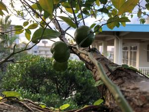

うるがいの話 ある日
最新: 観音経うるがいとは 前提知識です
カニの画像をクリックすると『うるがいの話』サイトを表示します|
|
【うるがいの話】 うるがい(ｳﾙｶﾞｲ urugai)とは、『もずくがに』の名前でとても大きくなります。 |
|---|---|
|
|
【Got cat カミマヤーの話】 たながー（ﾀﾅｶﾞｰtanagaa）とは手長えびのことで、何種類かあり大きいのは車 エビぐらいになります。 |

|
【ぶながぁの話】 ぶながー(bunagaa)とは、赤い髪の毛、赤い身体、そして身長は１ｍ２０ｃｍ ぐらい、川の蟹を食べているの目撃された。場所は沖縄県国頭郡大宜味村のと ある村僕の隣近所に住んでいる爺さんから、聞いた話です。 |
|
|
【ギーマの話】 ギーマ(giima)とは、山原の里山に咲くスズランに似た、 花を付けます。実は食べられます、 気が付くと口の周りが紫になっています。 |
2021年11月11日 (木）観音経
21:18

瀬戸内寂聴さんが亡くなった。日本人なら、観音経は覚えていた方がいいと何
かの本に書いてあった記憶がある。そして、飛行機に乗るときは皆がどうぞ無
事でありますようにと観音経を唱えるとも。観音経を唱える時は、度々そのこ
とを思い出す。とうとう、ビットコインの新規口座開設の手続き始めた。案ず
るより産むが易しである、なにごとにも経験だと気負いながらネットから手続
きをするが、げ！、英語やんけ（日本語に翻訳し、かつ、手続きを紹介する参
考サイトを見ながら対応する）、なんと、免許証（顔写真がある表）を手にし
顔を自撮りする。それをサイト上にアップする。ふむふむ、なるほど。とりあ
えず、手続きを終える。つぎは、仮想通貨取引所から届く書類を受け取ること
になる。職業欄は、失業あるいは無職を選択した、あああ。このあと、先輩役
の子供が来たので、ビットコインの口座開設の手続き始めたよと言ったら今が
値段が下がっているので買いだよと言われる、ほー。子供はてっきり消滅した
と思っていた傷病手当の手続きをするため、空きの封書を貰いに来ただけだっ
たが。